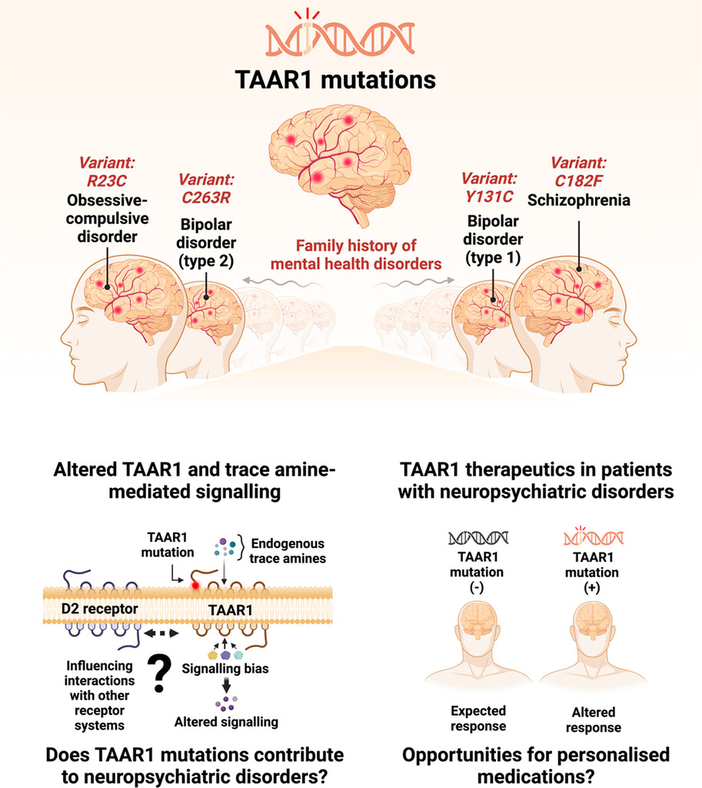
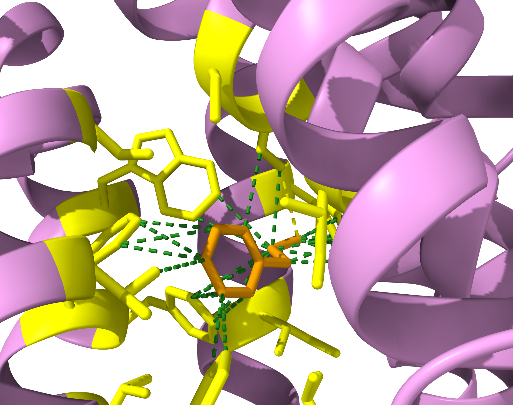

.jpeg)
Molecular Pharmacology of Neuropsychiatric Targets
Our research focuses on understanding how neuropsychiatric drug targets work at the molecular level in order to develop more effective therapeutics. We study G protein-coupled receptors (GPCRs, e.g., TAAR1), which are implicated in neurotransmission and play a significant role in disorders such as schizophrenia, depression, anxiety, and addiction.
Using a combination of experimental pharmacology and computational structural approaches, we study ligand binding, receptor activation, and downstream signaling pathways. This includes dissecting efficacy, potency, and signaling bias in order to better understand how different compounds produce different functional effects.
Our effort is focused primarily on moving beyond the traditional "one-drug-one-target" paradigm. To define the broader pharmacological profiles of centrally acting drugs, we investigate their polypharmacology and off-target effects. The use of this approach contributes to the discovery of previously unrecognised mechanisms of action and identifies new opportunities for therapeutic optimisation and drug repurposing.

Precision Psychiatry: Genetic Mutations in Neuropsychiatric Targets
Psychiatric disorders are highly heterogeneous, with substantial variability in risk, progression, and response to treatment. Our research focuses on developing precision medicine approaches aimed at addressing neuropsychiatric targets to address this challenge.
Our research focuses on identifying functionally relevant variations in key targets and understanding how these variations influence therapeutic outcomes. By integrating large scale data from biobanks and research consortia, we prioritize variants that are likely to change protein function and have a direct bearing on disease biology.
Our study examines how variations in the Trace Amine-Associated Receptor 1 (TAAR1), a neuropsychiatry target, influence receptor function, signaling, and pharmacological activity. These insights we aim to stratify patients based on predicted drug response and identify subgroups that may benefit from TAAR1-targeted therapies.

Drug Design and Discovery
Our research focuses on the application of structure-based drug design to define how ligands interact with neuropsychiatric targets (e.g., TAAR1) at atomic resolution. By leveraging advances in protein structure determination and molecular modelling, we are able to identify binding pockets, predict ligand-receptor interactions, and optimise compounds with improved potency and selectivity.
In addition, we utilise ligand-based approaches to investigate the relationship between chemical structure and biological activity. Our research also focuses on the integration of artificial intelligence and machine learning to navigate the complex chemistry and pharmacology spaces. By developing and applying predictive models, we identify new chemotypes and uncover hidden polypharmacology across neuropsychiatric targets.
Our goal is to create a unified framework for rational drug discovery by combining structure-based, ligand-based, and AI-driven methodologies. Through this integrated strategy, we aim to develop new therapeutics with improved efficacy, safety, and translational potential for neuropsychiatric conditions.